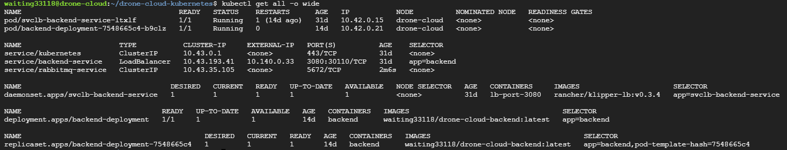

Backend Server of Drone Cloud Platform


This is the backend API server of Drone Cloud Platform, used for handle drone communication between drone's android app and the drone cloud platform.
Project introduction
File structure
- Src - The main source code
- Entity - Datebase schemas
- Helpers - Some helper funtions
- MiddleWares - Intermediate checkpoint services
- Routes - Restful API routes
- Services - The main business logic
- Types - TypeScript type definitions
- Server.ts - Main entry point
- Package.json - The dependency list
- Dockerfile - For creating docker container
- Docker-compose - For creating multi-containers/services environment
- .env - Environment variables
Production Cloud Infrastructure

- Infra as a Service(IaaS)
- Google Coompute Engine (Ubuntu 20.04)
- Platform as a Service (PaaS)
- Cloud SQL (MySQL)
- Container Orchestration Platform
- K3S (light weight kubernetes) 
- Message Broker
- RabbitMQ AMQP server
Gihub Action CI/CD pipeline

Multi-drone Simulation
 Please start the simulator one by one!
Please start the simulator one by one!
docker run -p 5671:5672 -it --name sitl_1 waiting33118/ardupilot-sitl # 1st
docker run -p 5672:5672 -it --name sitl_2 waiting33118/ardupilot-sitl # 2nd
docker run -p 5673:5672 -it --name sitl_3 waiting33118/ardupilot-sitl # 3rd
After enter the terminal, execute the script
./start
Experiment Results
Control drone by platform service
Pilot remotely control

Project Setup
Prerequisites
- MySQL server (Install locally/ Docker Image)
- RabbitMQ server (Install locally/Docker Image)
Recommend to install locally for more stable
Install dependencies
npm install
Config Environment Variables
Copy env example file and rename to .env
cp .env.example .env
Fill in credentials
FRONTEND_URL=http://localhost:8080
BACKEND_SERVICE_SERVICE_PORT=3080
RABBITMQ_SERVICE_SERVICE_HOST=127.0.0.1
RABBITMQ_SERVICE_SERVICE_PORT=5672
RABBITMQ_SERVICE_USER=user (replace by your username)
RABBITMQ_SERVICE_PASSWORD=rabbitmq (replace by your password)
MYSQL_SERVICE_SERVICE_HOST=127.0.0.1
MYSQL_SERVICE_SERVICE_PORT=3306
MYSQL_SERVICE_USER=root (replace by your username)
MYSQL_SERVICE_PASSWORD=password (replace by your password)
JWT_TOKEN_SECRET=littleSecret
Start The Server
npm run dev
The server will now run on http://localhost:3080
Build project
npm run build
Drone Cloud System Environment (Optional)
Prerequisite
- Node.js >=v14.18.1
- Docker
- Docker-compose
FrontEnd
git clone https://github.com/waiting33118/drone-cloud-platform3.0
- Please read the README.md section to start the frontend localhost server
Backend API server, RabbitMQ broker and Drone Simulator
- Edit ENV variables in
.docker.envfile
Startup System
# attach mode
docker-compose up
# detached mode
docker-compose up -d
# follow logs
docker-compose logs -f
# stop all containers(remove volumes)
docker-compose down -v
Initial Drone Simulator
Attach the "sitl" container
docker attach drone-api-server_sitl
Run script to build sitl
./start.sh